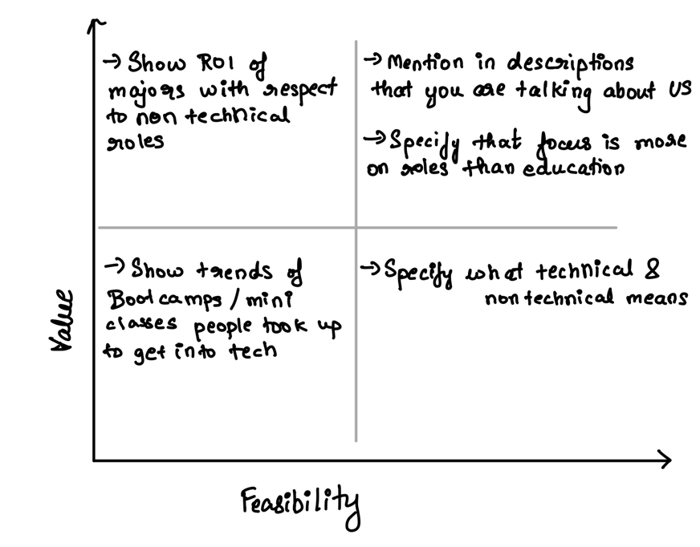

I come from India, where most parents force their children to pursue technical degrees since they believe that is the only way they can earn a decent wage and live a good life. A similar trent is prevalent in a lot of other countries including the US. With my story I aim to convince students and in turn parents that they do not have to fall into the trap of STEM degrees just for the sake of money. They can very easily live a great life and earn enough money doing whatever they want to. My intention behind posting comparision charts was also to show that there is not a lot of difference in the salaries earned in technical and non technical jobs and that students should be confident in their skillset as they can earn as much or in some cases even more than their technical peers
I wanted to understand my final story board better from a technical, data viz and layman perspective. So I interviewed one from each category. I interviewed a student pursuing a technical masters program at Carnegie Mellon university in order to understand his perspective on how the website renders to a user and if I can make any changes in terms of presenting my blog. I then asked a data visualization expert in order to garner her perspective on how I can improve my charts. Finally, I asked a friend who did not have any technical knowledge in order to understand if she would enjoy reading it as an outsider and if the topic is interesting enough
| Interview prompts | Interviewer 1 (Technical Expert) | Interviewer 2 (Data Viz Expert) | Interviewer 3 (Regular User) |
|---|---|---|---|
| Can you tell me what you think this is? | Kind of looks like a blog but it does not have a navigation bar and that makes it look more like a slideshow. It tells me about how I can become rich without possessing technical skills. I see some charts and graphs too talking about salaries | An article talking about how I can make money with only non technical skills. I also see some charts that are used to support the statements made overall | On the first look it feels like a pdf about how to have a viable non technical careers. As I scroll more, it feeels more like a medium blog with some picture graphs |
| Who do you think the intended audience is? | I think the audience is anyone who wants to have a lucrative career in a non STEM field. Since you seem to have a lot of college student info maybe its a little more geared towards students? | Probably college graduates choosing a major. They can plan out what courses to select based on the tree map you made and the salaray graphs you have. It can also be useful for those looking to make a career switch since they can see where the money is | My mom! Since I decided to take up a non STEM path, it was very difficult to convince my parents. Maybe I can use these statistics to convince her that I will still get a job! |
| Do you think the content keeps you nterested enough to follow through? | It does! Though I might not go through the whole thing since there is a lot of scrolling | Yeah. I found some of the interactive visualization pretty interesting and would enjoy looking through it and testing out potential career ideas | I would definitely click on it if I see it on a social media website since the title is catchy |
| Is there anything you find surprising or confusing? | In the graph showing salary comparisions I was surprised about how some places show non technical roles earning significantly more salaries. Also why is there data and analytics separate shouldnt it fall under tech? | The slide about college majors shows that each sub major has the exact same distribution. If thats not true then it could be a little misleading | I dont find anything confusing as such |
| Do you have any recommendations for change or anything you would do differently? | Get college major statistics from five thirty eight to understand and identify popular college courses. This source would be used to understand and confirm if students are actually moving towards more technical majors or if software for example is the most popular major selection |
I really enjoyed exploring the features of shorthand and would be using that as the primary tool to host and display my story. Since I would also need to display a lot of charts, I plan on using flourish and Tableau to create the required charts that would depict my story better.
I really liked the idea of enlarging the main insight numbers so I plan to incorporate that to show data like “Percentage of people pursuing technical degrees etc”. I also plan on including quotations from famous CEOs who have creative degrees since that would create a better impact for my story. Finally, I would also want to explore more comparison techniques to prove that non tech jobs are just as attractive as tech jobs.
The critique in class gave me a stronger insight on my sketches. My peers mentioned that I could focus on one country instead of doing a more global approach and I plan on focussing on United States to give more focusses recommendation. They were also initially curious If my aim is to gear people towards non technical careers or majors and this is something I am still thinking about. But I currently am leaning towards non technical careers over majors since I do not want to impose the thought that you need some kind of a degree to be successful. In one of my visualizations I mentioned a comparision between tech and non tech and one of my peers suggested I give more details on what I mean by tech and non tech. This is something I plan on exploring further. Finally they recommended focusing on tech job data in my college placement data and graying out everything else. While I do think that may have value I want to hold out on that since I want to see if I can derive any insights from what I find here too
